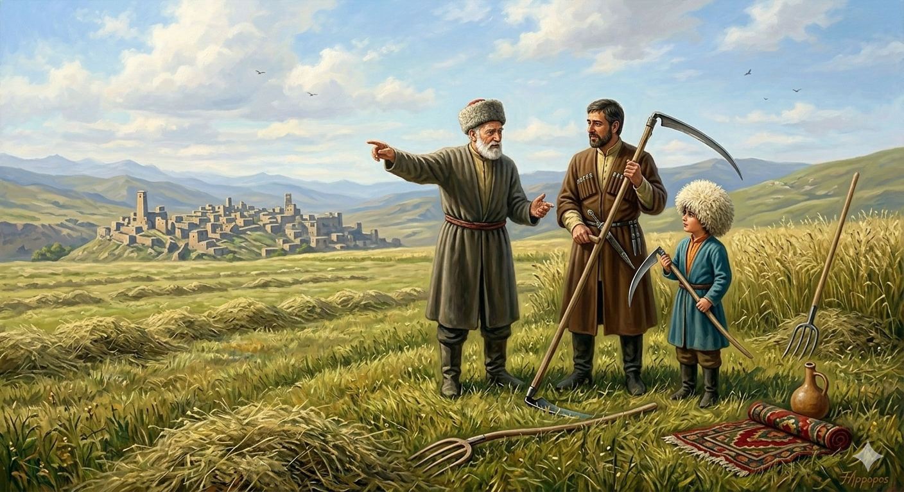

И.А. Дахкильгов. Хьехаме дувцарш - поучительные рассказы-притчи.
И.А. Дахкильгов. Хьехаме дувцарш - поучительные рассказы-притчи. Из ингушского фольклора.

Сона а веза сай воӀ
Мангала цкъа баха хиннаб ха яаа къонахи, кхийна вола цун воӀи, кхувш воагӀа виӀий-воӀи. Ди дӀайха хиннад, цӀияьнна боагаш малх хиннаб. ВиӀий-воӀа керта тӀа кий йоацаш хиннав, атта малх кертах гӀоргболаш. ТӀаккха цу кӀаьнка дас шийна тӀатулла кий Ӏо а яьккха, кӀаьнка тӀатиллай, ше корта берзан висав. Циггач воккхача саго ший кий тиллай цу ший виӀий керта тӀа. Эхь хийттад кхийнача воӀа. - Ер фуд хьа? - аьнна хаьттад цо даьга. Воккхача саго, кӀаьнка пӀелг тӀа а хьекха, аьннад: - Хьона хьай воӀ везаш санна сона а веза сай воӀ, яхалга да хьона.
РУССКИЙ
И я люблю своего сына
Как-то старик, его сын и внук пошли на покос. День был жаркий, и нещадно палило солнце. Мальчик был без шапки, и солнце могло напечь ему голову. Тогда его отец снял свою шапку и надел на мальчика, а сам остался с непокрытой головою. Тут старик снял свою шапку и натянул ее на голову своего сына. Взрослый сын застеснялся. - Что все это значит? - спросил он у отца. Старик указал пальцем на мальчика и сказал: - Подобно тому, как ты любишь своего сына, так и я люблю своего.
ENGLISH
I love my son
One day, an old man, his son, and his grandson went out to cut the hay. It was a hot day and the sun beat down mercilessly. The boy wasn't wearing a hat and his head was burning in the sun. His father took off his own hat and put it on the boy's head, leaving himself bareheaded. Then the old man took off his hat and put it on his son's head. The grown son felt embarrassed. "What does all this mean?" he asked his father. The old man pointed at the boy and said, 'Just as you love your son, so I love mine.'
НОХЧИЙН
Суна а веза сан воӀ
Мангалан цкъа бахан хилла хан йаьхьна къонах а, кхиина волу цуьнан воӀ а, кхуьуш вогӀу кӀентан кӀант а. Де довха хилла, цӀе йаьлла богуш малх хилла. КӀент-кӀентан коьртан тӀехь куй боцуш хилла, атта корта багор болуш. ТӀаккха цу кӀентан дас шена тӀетиллина куй охьа а баьккхина, кӀантана тӀетиллина, ша корта берзина висна. Цигахь воккхачу стага шен куй тиллина цу шен воӀан коьртан тӀе. Эхь хетта кхиъначу воӀан. - ХӀара хӀун ду хьан? - аьлла хаьттина цо дега. Воккхачу стага, кӀантана пӀелг тӀе а хьажина, аьлла: - Хьуна хьай воӀ везаш санна суна а веза сай воӀ, бохург ду хьуна.
ПОГОВОРКИ
Аренаш оахаш кулгаш лестадац. - Во время пахоты руками не машут. Даьре хабар дувцачох пайда баргбац (лорале). - От краснобая не будет пользы (берегись его). Зовзал совъяьлча, къизал котйоал; денал котдаьлча, сабар совдоал. - Где много трусости, там много жестокости; где много мужества, там больше спокойствия (достоинства). Хьох-м тешар со, хьо тешачох тешац. - Тебе-то я верю, но не верю тому, кому ты веришь. Дезала ца вийзар наха вийзавац. - Кого не любят в семье, того и в народе не любят. Жена мотт латтача гонахьа бертий хьувз. - Волки рыщут там, где стоит овечий загон. Йиша ялар - кор дохар, воша валар - пен сагӀун чубахар, да валар - тхов тӀакхетар, нана ялар - цӀа бухдалар. - Умерла сестра - окна нет; умер брат - рухнула стена дома; умер отец - крыша обрушилась; умерла мать - рухнул весь дом. ЙоӀ яьчо воӀ а ву. - Родившая дочь родит и сына. Киса диза долчун корта а хьаькъалах бизи хет. - Тот, у кого карман полон денег, кажется людям и умным. Кочъярг хуларе, качъерг-м йолаш яр. - Лишь бы было, из чего сшить рубаху, а из чего сделать воротник, у нас найдется. Кхела тӀехьа декхар доагӀа, декхарийна тӀехьа харцо йоагӀа, харцонна тӀехьа даькъазало йоагӀа. - Решение суда (местного, медиаторского) влечет за собою долг, долг влечет кривду, кривда влечет позор. Кхувр (пхьа лехар) кхийнав, удар (пхьа боаллар) вийнав. - Стремившийся (свершить кровную месть) достиг своего, избегавшего (возмездия) убили. Къайго а хьалхагӀа бӀы бий мара таьлми даккхац. - Даже ворона сначала гнездо строит и лишь затем воронят выводит. "Къонах ва" аларах хулаш вац къонах. - Сколько ни тверди: "Я мужчина" - мужчиной не станешь. МаьрцӀаьшца къийса нус цӀенах ехай. - Не ужившуюся с родственниками мужа отправили в отцовский дом. Муш, мелла бӀаха из хиларах, хад; оапаш, мелла говза уж хиларах, гучабоал. - Как ни длинна веревка - конец будет; как ни хитра ложь - обнаружится. Наьха исташца дов даьккхар юь Ӏаьржача эттав. - Опозорится тот, кто затеет склоку с женщинами. Наьха (кхыча) юртарча сагал ший юртара жӀали тол. - Собака своего села лучше жителя чужого села. Оалхазара а беза ший мехка бола бӀы. - И птица любит гнездиться у себя на родине. Сатоха а деза; са кхоачаделча, сихвала а мегаргвац. - Надо быть терпеливым; но если даже терпение кончилось, и тогда нельзя горячиться. Ткъам боаца лаьча къайгаша чувхадаьд. - Бескрылого сокола и вороны гоняют. Хи йисте вагӀачоа хина хам бовзац. - Живущий у воды ее не ценит. Эггар пайда боаца хӀама - воча сагаца доттагӀал лацар да. - Нет ничего хуже, чем сдружиться с подлецом.